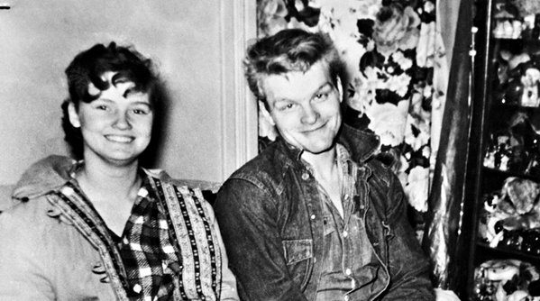
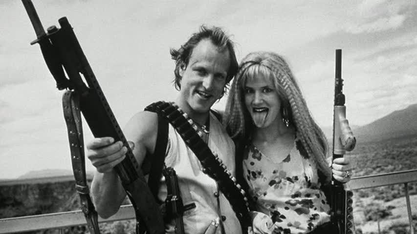
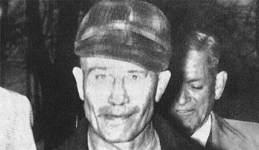

According to Karen Boyle, Edmondson and Darras consumed copious amounts of hallucinogenic drugs while watching the movie in the days before the killings. When they first began to discuss murder, Edmondson said it was “fantasizing from the movie” (Boyle). The lack of motive in the murder leads to the idea that the murder was simply for fun, which is the reasoning for the majority of the murders in Natural Born Killers. The family of Patsy Byers later sued the filmmakers for damages in the death of their daughter, citing that the film caused “imminent lawless activity” (Boyle). Also, Darras found the movie to be touching in a more personal way. The main character in the movie (Mickey Knox) said that violence runs in his family and cited his father’s death as an example. Edmondson said that Darras was especially influenced by the movie at this point because violence ran in his own family; his father abused his mother and eventually took his own life.
The 19- and 14-year-old, respectively, went on a murder spree through their town and neighboring towns as well, leaving 11 dead and ending in a police chase similar to one at the beginning of NBK. The movie bears several odd similarities to this real life tragedy- beginning with the fact that Starkweather murders Fugate’s parents. In NBK, in order to rescue her from her abusive mother, Mickey Knox kills Mallory Wilson’s family. Similar to NBK, the more time the two spend together on the road, the more strained their relationship is, until Fugate eventually betrays Starkweather. Another dark connection between the two is that Fugate is thought to have sexually mutilated one of their victims, while both Mallory takes delight in leading her victims on, then reversing the role of dominance on them. Because of this, it seems that the character of Mallory Knox may be based loosely off of Fugate. Without more insight into Fugate’s personality, though, it is impossible to determine how similar the two are.
Gein, while under inspection from the local police, was discovered to be harboring dead bodies which he used for his crafts. Among the articles found, Gein had a human head serving as a bowl, furniture covered with human skin, and most horrifically, a suit made out of skin. These atrocities inspired horror movie characters throughout Hollywood. The first murderer to appear fashioned after Gein was Norman bates - who later became the inspiration behind the movie Psycho. Later films to be inspired by Gein and his infamous paraphernalia were The Texas Chainsaw Massacre by Tobe Hooper and Silence of the Lambs, in which Buffalo Bill was fashioned after Gein. He even inspired his own movie - Ed Gein - because before there was Dhamer, and before there was Gacy - there was Ed.

Natural Born Killers was supposedly inspired by a real pair of lovers by the name of Charles Starkweather and Caril Ann Fugate.

Natural Born Killers is a movie about a married couple that drive across the country, killing all in their way. It has said to have inspired several copycat killings, including the murder of Bill Savage and Patsy Byers by Sarah Edmondson and Ben Darras.

Although not as notorious as John Wayne Gacy (the Killer Clown) or Jack the Ripper, Ed Gein’s bizarre methods and crafts earned him notoriety within his home town and within Hollywood.